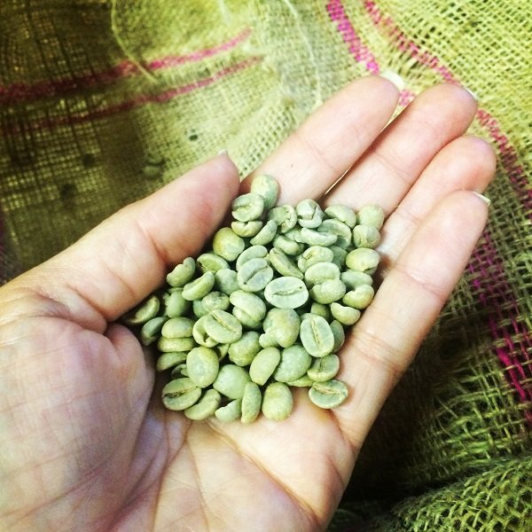

Kahve Çekirdeği Çeşitleri
Kahve, Güney ve Orta Amerika, Afrika başta olmak üzere Karayipler ve
Asya gibi yaklaşık 80 ülkede yetişmektedir. Yetiştiği alana
baktığımızda yüzlerce kahve çeşidi olduğunu düşünebiliriz
Kahve Çekirdeği Türleri
Kahve, Güney ve Orta Amerika, Afrika başta olmak üzere Karayipler ve
Asya gibi yaklaşık 80 ülkede yetişmektedir. Yetiştiği alana
baktığımızda yüzlerce kahve çeşidi olduğunu düşünebiliriz. Fakat tümü
dört ana çekirdeğin varyasyonlarıdır. Arabica, Robusta, Liberica ve
Excelsa kahvenin başlıca dört çekirdeklerini oluşturmaktadır.

Arabica
Arabica sınıfı kahveler dünyadaki üretim miktarının %75’ini
oluşturmaktadır. Üretim alanının yaygınlığı da tercih edilmesindeki en
büyük etkenlerden biridir. Arabica kahve çekirdekleri ağırlıklı olarak
Latin Amerika, Orta ve Doğu Afrika, Hindistan ve Endonezya’da 600
metreden yüksekte yetişmektedir. Hatta Endonezya, üçüncü büyük
yıkanmış Arabica kahve üreticisi konumundadır.
Robusta
Arabica kadar büyük bir üretim ve tüketim yüzdesine sahip olan diğer
kahve çeşidi ise Robustadır. Robusta sınıfı kahveler Batı ve Orta
Afrika’da, Güneydoğu Asya’da ve Brezilya’da yetişmektedir. Kahve
çeşitleri arasında en yaygın şekilde üretilen kahve çekirdeği
olmasından dolayı çok daha kolay ulaşılabilmekte ve tercih
edilmektedir. Robusta, kahve çeşitleri arasında %30 üretim miktarını
sağlamaktadır.
Liberica
Kahve çeşitleri arasında bilinirliği oldukça az olan Liberica,
1890’larda Arabica kahve çekirdeklerinin hızla tükendiği bir dönemde
kullanılmıştır. Filipinler’de oldukça kısıtlı bir alanda yetişen
Liberica çekirdeği diğer kahve çeşitlerine göre daha iri tanelidir.
Günümüzde çok fazla tercih edilmeyen, bu yüzden de rastlamadığımız
Liberica’nın tadı diğerlerine göre daha islidir. Oldukça az
üretilmesinden ve lezzetinin yavan olmasından dolayı düşük bir üretime
sahiptir.